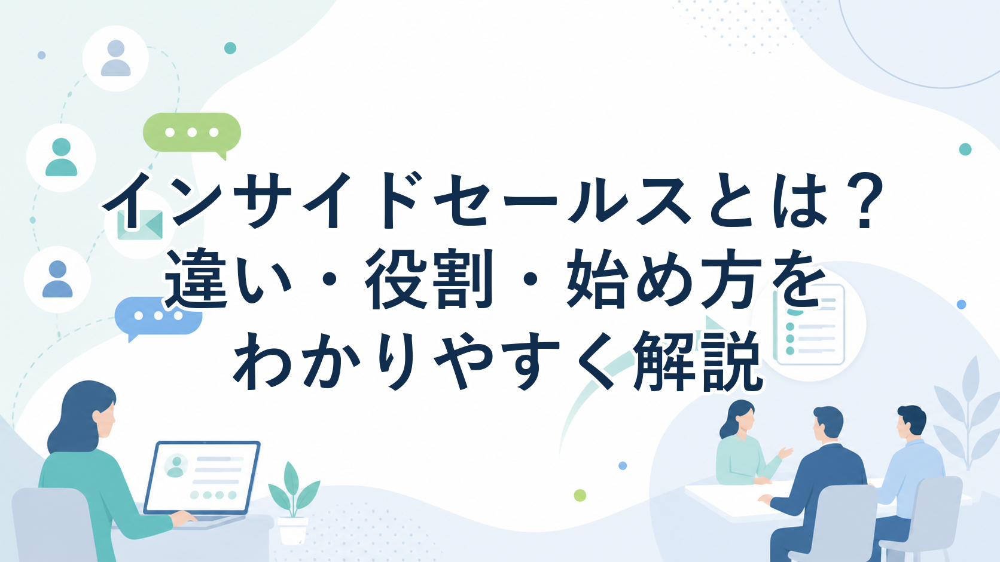

インサイドセールスとは？テレアポとの違い、役割、始め方をわかりやすく解説

みなさんこんにちは、Valorize AI代表の鈴木創也です。
インサイドセールスという言葉を調べると、「内勤営業」「非対面営業」「電話やメールで行う営業」と説明されることが多いです。
ただ、その説明だけでは、インサイドセールスの役割はかなり狭く見えてしまいます。実際には、見込み顧客の関心や検討状況を把握し、必要な情報を届け、商談として引き継げる状態を作る役割まで含めて考える必要があります。
インサイドセールスを単なる電話担当として置くと、アポイント数は増えても、商談の質が上がらないことがあります。一方で、顧客情報の整理、継続的な接点づくり、商談化の見極めまで設計できれば、フィールドセールスが提案やクロージングに集中しやすくなります。
この記事では、インサイドセールスの意味、テレアポやフィールドセールスとの違い、主な役割、導入メリット、注意点、始め方を整理します。
インサイドセールスとは
インサイドセールスとは、電話、メール、Web会議などの非対面手段を使い、見込み顧客と接点を持つ営業活動です。日本語では内勤営業と呼ばれることもあります。
ただし、単に「社内にいる営業担当者」と理解すると、本質を見誤ります。インサイドセールスは、営業プロセスの中で、商談前の顧客接点を担う役割です。
たとえば、資料請求をした企業に連絡します。展示会で接点を持った企業をフォローします。過去に問い合わせがあったものの、すぐに商談化しなかった企業へ情報提供を続けます。狙いたい企業に対して、電話やメールで最初の接点を作ります。
これらはいずれも、ただ連絡するだけではありません。相手企業が何に関心を持っているのか、どの段階で検討しているのか、今すぐ商談に進むべきなのか、もう少し情報提供を続けるべきなのかを見極める必要があります。
つまり、インサイドセールスは、非対面で顧客と接点を作りながら、検討状況を整理し、次の営業活動につなげる役割です。
McKinseyの2026年Global B2B Pulse Surveyでは、13か国のBtoB意思決定者を対象に、購買過程で使われる接点や購買体験への期待が調査されています。同調査では、BtoBの買い手が購買過程で平均10チャネルを利用し、対面、リモート、デジタルをまたいで一貫した情報や専門的な対応を求めていると説明されています。海外調査ではありますが、BtoB購買が一つの接点だけでは完結しにくくなっていることを理解する参考になります。
この前提で考えると、インサイドセールスは「電話担当」ではなく、複数の接点を通じて顧客理解を深め、商談前に必要な情報を整理する機能として設計すべきです。
テレアポ・フィールドセールスとの違い
インサイドセールスを理解するときは、近い言葉であるテレアポと、役割分担の相手になるフィールドセールスを分けて整理すると分かりやすくなります。
テレアポとの違い
テレアポは、電話でアポイントを獲得する活動です。目的は比較的明確で、短期的に商談や訪問の約束を取ることにあります。もちろん、テレアポにも顧客理解や会話設計は必要です。ただ、活動の中心はアポイント獲得です。
一方、インサイドセールスは、アポイントを取ることだけを目的にしません。見込み顧客の関心度を確認し、課題や検討状況を聞き取り、必要に応じて情報提供を行い、商談化すべきタイミングを見極めます。
今すぐ商談にならない相手であっても、将来的に検討が進む可能性があれば、関係を切らずに継続接点を持ちます。この点が、短期のアポイント獲得を中心にするテレアポとの大きな違いです。
フィールドセールスとの違い
フィールドセールスは、商談、提案、条件調整、クロージングなどを担う営業担当です。顧客と直接話し、提案内容を詰め、受注に向けて意思決定を進めます。
インサイドセールスは、その前段で顧客の状況を把握し、商談として渡せる状態を作ります。どの企業が検討しているのか。どの課題がありそうなのか。誰が関係者なのか。次の商談で何を話すべきなのか。こうした情報を整理して引き継ぐことで、フィールドセールスが提案やクロージングに集中しやすくなります。
両者は優劣ではなく、役割分担の違いです。インサイドセールスが商談前の接点と情報整理を担い、フィールドセールスが提案と意思決定を前に進める役割を担う。この分担が明確になるほど、営業活動は進めやすくなります。
インサイドセールスの主な役割
インサイドセールスの役割は、大きく四つに分けられます。
初回対応
問い合わせ、資料請求、ウェビナー参加、展示会での名刺交換など、顧客との接点が生まれた後に、早い段階で連絡します。ここで重要なのは、単に「商談しませんか」と聞くことではありません。相手が何に関心を持って接点を作ったのか、どの程度検討しているのか、どのような情報が必要なのかを確認することです。
継続的な情報提供
すべての見込み顧客が、すぐに商談へ進むわけではありません。予算が決まっていない、導入時期が先である、社内で課題が整理されていない、比較検討が始まったばかりである。こうした見込み顧客に対して、情報提供や状況確認を続ける活動が必要になります。
インサイドセールスは、顧客との接点を切らさず、検討が進んだタイミングで適切に商談へつなげます。
商談化の見極め
これは、見込み顧客を今すぐ商談へ進めるべきかを判断する活動です。継続的な情報提供は、まだ検討が浅い相手との接点を保ち、必要な情報を届ける活動です。一方、商談化の見極めでは、課題、導入目的、検討時期、予算感、関係者、温度感などを確認し、フィールドセールスへ渡せる状態かどうかを判断します。
買い手側の状況が複雑であるほど、関係者や検討状況を整理してから商談へ渡す役割は重要になります。相手がまだ情報収集段階なのか、具体的な比較段階なのか、社内で意思決定に進める状態なのかを見極めることで、商談の空振りを減らしやすくなります。
商談化と引き継ぎ
インサイドセールスが商談を設定しても、フィールドセールスに情報が十分に渡っていなければ、商談の質は上がりません。顧客情報、接触履歴、聞き取った課題、想定される関心、次に確認すべき論点を引き継ぐ必要があります。
インサイドセールスの価値は、アポイント数だけでは測れません。フィールドセールスが初回商談で深い会話に入りやすい状態を作れるかどうかが重要です。
インサイドセールスの種類
インサイドセールスには、いくつかの型があります。
代表的なのがSDRです。SDRは、問い合わせ、資料請求、ウェビナー参加、展示会での接点など、すでに何らかの反応がある見込み顧客に対応する役割です。インバウンド型、反響対応型と呼ばれることもあります。
次にBDRがあります。BDRは、自社側で狙う企業を決め、まだ接点が薄い企業に対して商談機会を作りに行く役割です。アウトバウンド型、新規開拓型として整理されることが多いです。
もう一つ、ハウスリスト対応もあります。過去に問い合わせがあった企業、休眠顧客、展示会で接点を持った企業、既存顧客の別部署など、自社がすでに保有しているリストを再整理して接触する運用です。
どの型を採るかは、自社の営業課題によって変わります。問い合わせ対応を強化したいのか、新規開拓を増やしたいのか、過去接点を掘り起こしたいのかによって、必要な体制や接触方法は異なります。
重要なのは、SDRやBDRという名称を使うことではなく、どの顧客群に、どの目的で、どの接点を作るのかを決めることです。
インサイドセールスを導入するメリット
インサイドセールスを導入するメリットは、営業活動を役割ごとに分け、見込み顧客への接点と情報整理を継続しやすくなることです。
接触機会を増やしやすい
電話、メール、Web会議を組み合わせれば、遠方の企業や検討初期の企業にも接点を持ちやすくなります。営業担当者がすべての初期接点と商談対応を抱えるよりも、見込み顧客への連絡を継続しやすくなります。
すぐに商談化しない見込み顧客を放置しにくい
営業担当者が商談対応やクロージングに追われていると、検討初期のリードや休眠顧客へのフォローは後回しになりがちです。インサイドセールスが継続的に接点を持てば、検討が進んだタイミングを逃しにくくなります。
フィールドセールスが提案に集中しやすい
ヒアリング、情報整理、温度感確認をインサイドセールスが担うことで、フィールドセールスは提案、条件調整、意思決定支援に時間を使いやすくなります。商談に入る前から顧客の課題や検討状況が分かっていれば、初回商談の会話も深めやすくなります。
顧客情報や接触履歴が蓄積される
誰が、いつ、何を話し、どの情報を送ったのかが残れば、次回接触や引き継ぎがしやすくなります。担当者個人の記憶だけに頼らず、チームで営業活動を改善しやすくなります。
導入時に起きやすい課題と注意点
インサイドセールスは、担当者を置けば自然に機能するものではありません。
よくある課題の一つは、役割分担が曖昧なまま始めてしまうことです。インサイドセールスが何を担当し、マーケティングやフィールドセールスが何を担当するのかが決まっていないと、結局は「電話をかける人」や「雑務を引き受ける人」になってしまいます。
次に、引き継ぎ基準の曖昧さがあります。どの状態になったら商談として渡すのかが決まっていないと、商談数だけは増えても、フィールドセールス側では「まだ提案できる状態ではない」と感じることがあります。商談化数だけを追うと、質の低い商談が増え、営業全体の負担が増える可能性があります。
顧客情報や接触履歴が残らないことも問題です。電話した事実だけが残り、何に関心があり、何を嫌がり、次にいつ連絡すべきかが残っていなければ、次の接触は個人任せになります。担当者が変わると、顧客との会話が最初からやり直しになることもあります。
また、ツールを入れるだけでは運用は定着しません。CRM、SFA、MA、Web会議ツール、メール配信ツールなどは役立ちますが、入力ルール、引き継ぎルール、フォロータイミング、見るべき指標が決まっていなければ、現場では使われにくくなります。
KPIも絞る必要があります。接触数、商談化数、商談化率、引き継ぎ後の商談品質など、最初は少数の指標に絞り、目的に合っているかを確認する方が現実的です。細かすぎる指標を大量に置くと、運用そのものが重くなります。
インサイドセールスの始め方
インサイドセールスを始めるときは、以下の順番で設計すると進めやすくなります。
目的を決める
問い合わせ対応を速くしたいのか。新規開拓の接点を増やしたいのか。休眠顧客を掘り起こしたいのか。フィールドセールスに渡す商談の質を上げたいのか。目的が曖昧なまま始めると、活動内容もKPIも決まりません。
対象リードやターゲットを決める
どのリストを対象にするのか、どの業種や企業規模を狙うのか、どの接点を優先するのかを決めます。ここが曖昧だと、担当者は毎回「誰に連絡すべきか」から考えることになります。
連絡前に確認する情報を決める
企業情報、過去の接点、検討状況、想定課題、自社サービスとの接点、送付済み資料、Web行動など、何を見てから連絡するのかをそろえます。買い手が事前に情報収集している前提に立つなら、インサイドセールス側も、相手がどの情報を見て、何を知りたがっているのかを意識して接触する必要があります。
引き継ぎ基準を決める
どの課題が確認できたら商談化するのか。導入時期や関係者はどこまで聞くのか。フィールドセールスへ渡すときに、最低限どの情報を残すのか。ここを営業側と合意しておく必要があります。
記録と改善の運用を決める
CRMやSFAに何を残すのか、次回接触日はどう決めるのか、商談化しなかったリードをどうフォローするのかを決めます。
Sales Triggerでできること
インサイドセールスを機能させるには、接触する前の準備が重要です。誰に連絡するのか。どの情報を見て連絡するのか。どの課題仮説を持つのか。どの文面で接点を作るのか。商談化したら何を引き継ぐのか。
これらをすべて人手だけで続けようとすると、営業担当者の負担は大きくなります。接触数を増やそうとすれば準備が浅くなり、準備を丁寧にしようとすれば接触数が伸びにくくなる。この両立が、インサイドセールス運用の難しさです。
私たちValorize AIが提供するSales Triggerは、豊富な顧客情報データベースをバックボーンに持つ、セールスの半自動化AIエージェントサービスです。
人間がセグメントやターゲット条件を決めた後、条件に合う企業リストの作成、個社ごとの企業情報調査、調査情報と自社事業に合わせた提案文作成、メールや問い合わせフォームでのアプローチ準備を支援できます。自社で保有している営業リスト、展示会やイベントで接点を持った企業、過去の問い合わせや休眠顧客への連絡準備にも活用できます。
Sales Triggerは、営業担当者を不要にするサービスではありません。営業戦略、ターゲット判断、顧客と直接向き合う場面は人間が担います。アプローチ文も、送信前に人間がレビューし、内容に問題がないことを確認してから使う運用が基本です。
インサイドセールスで、接触対象の整理、顧客情報調査、提案仮説、連絡文面、引き継ぎ情報の準備に時間がかかっている場合は、Sales Triggerのサービスページをご確認ください。
https://salestrigger.valorize-ai.com/
まとめ
インサイドセールスは、非対面で営業する活動ですが、本質は電話をかけることだけではありません。見込み顧客の状況を把握し、必要な情報を届け、商談として引き継げる状態を作る役割です。
テレアポは短期的なアポイント獲得が中心です。フィールドセールスは提案やクロージングを担います。インサイドセールスは、その間に立ち、初回対応、継続的な情報提供、商談化の見極め、商談化と引き継ぎを担います。
導入するときは、担当者を置くだけでは不十分です。目的、対象リスト、接触前に必要な情報、引き継ぎ基準、記録と改善の運用を決める必要があります。
まずは、自社の営業活動で「誰に連絡するか」「何を見て連絡するか」「どの状態になったら商談として渡すか」が明確になっているかを確認してみてください。そこが整うほど、インサイドセールスは単なる電話担当ではなく、商談品質を高める役割として機能しやすくなります。